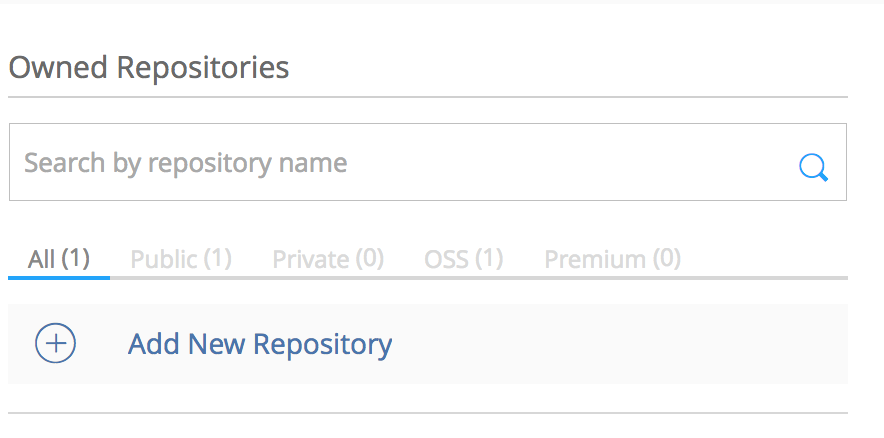
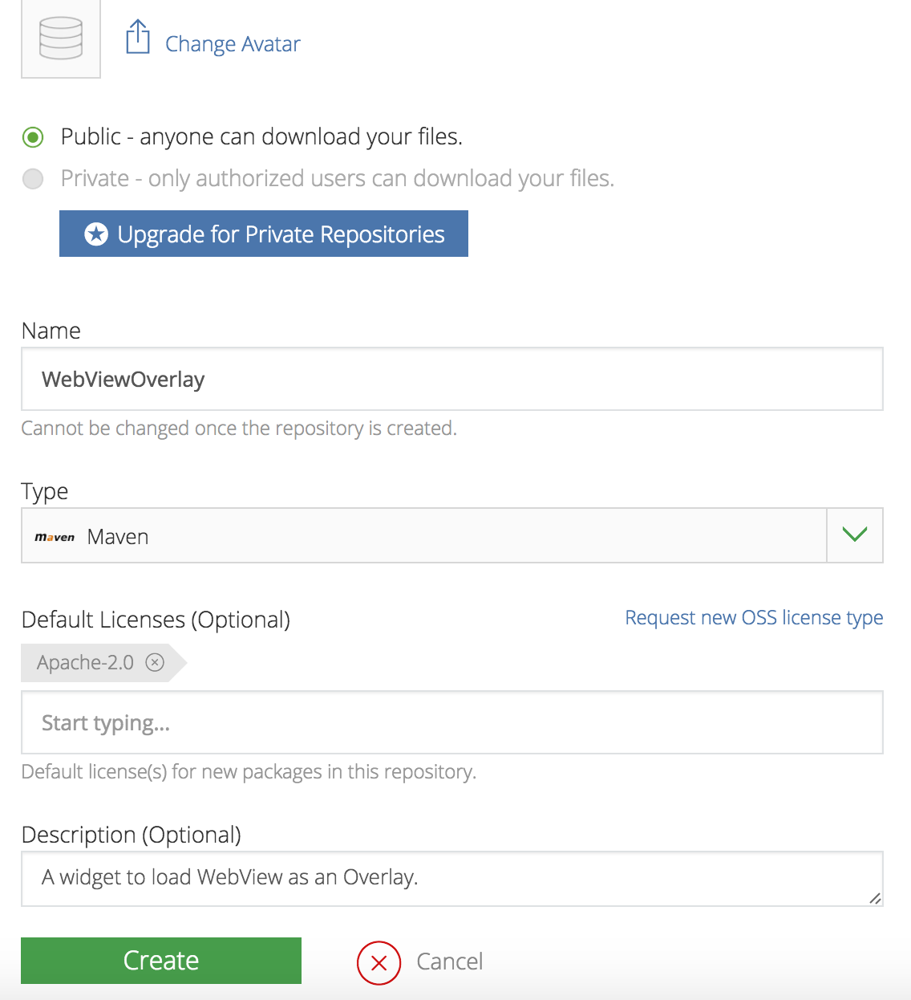
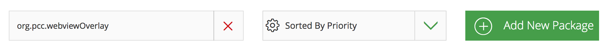
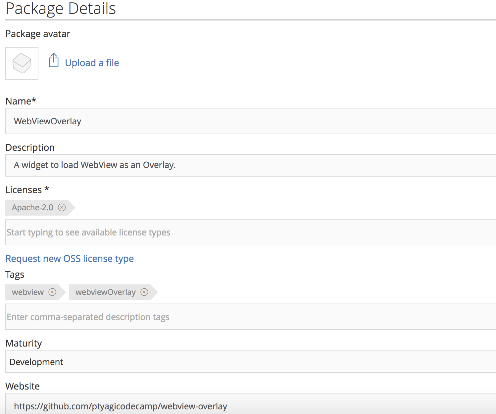
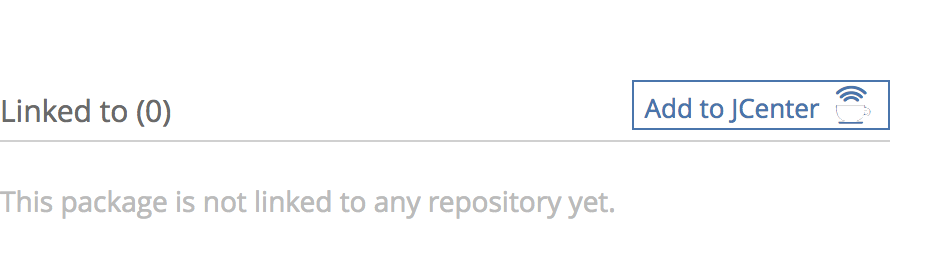
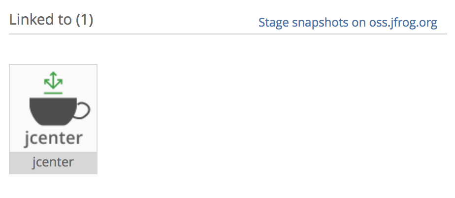

How did I publish Android Library to JCenter from Android Studio
Posted by ptyagi in Development
Introduction
JCenter is a Maven Repository or file server hosted by Bintray for
Android libraries. It’s a default repository for Android Studio. To demonstrate the process of
publishing an OpenSource Android library, I'm using WebViewOverlay widget library
for example. After uploading to JCenter artifact repo, WebViewOverlay widget can be dropped-in to your
project like this:
compile 'org.ptyagicodecamp:WebViewOverlay:1.0.2'
Uploading Android library (in aar format) to Bintray
-
Create log-in at Bintray. Scroll down to register for an open-source project.
-
Create a new repo: 
-
Fill-in all required information and click "create repo". It'll redirect to "package" screen. 
-
Click on “Create Package”. Fill in your package name and click on "Add New Package": 
-
It'll take you to enter package details. Fill-in details and click on "Create Package" at the bottom. 
And you’re Done with registering your Maven repository on Bintray !
Note: Link your Github account from Bintray, if you want to upload library from build.gradle (Android Studio).
You can do this by going into your repository on Bintray and selecting "Import from Github” option.
It’ll guide you through with rest of the steps.
Setting up Android Studio Project
- Create a new project in Android Studio.
- Module
WebViewOverlaycontains all the library code and moduleapphas sample app to demonstrate the usage of library. Make sure that you name module same as of artifact name configured at Bintray.WebViewOverlayin this example. Refer toWebViewOverlayat Github for source code. - Setup Android Studio project to be able to publish library to
jcenter()Maven repo, and add Bintray plugin to project’sbuild.gradle. Root levelbuild.gradlewill look like this:
buildscript {
repositories {
jcenter()
}
dependencies {
classpath 'com.android.tools.build:gradle:2.2.3'
classpath 'com.jfrog.bintray.gradle:gradle-bintray-plugin:1.4'
classpath 'com.github.dcendents:android-maven-gradle-plugin:1.4.1'
}
}
allprojects {
repositories {
jcenter()
}
}
- Update Bintray related credentials in
local.propertieslike this:
bintray.user=YOUR_BINTRAY_USERNAME
bintray.apikey=YOUR_BINTRAY_API_KEY
Note: Look for API KEY in your Profile section on Bintray.
- Add following in library module’s
build.gradle. In this casebuild.gradleofWebOverlay:
apply plugin: 'com.android.library'
ext {
bintrayRepo = 'WebViewOverlay'
bintrayName = 'WebViewOverlay'
publishedGroupId = 'org.ptyagicodecamp'
libraryName = 'WebViewOverlay'
artifact = 'WebViewOverlay'
libraryDescription = 'A widget to load WebView as an Overlay.'
siteUrl = 'https://github.com/ptyagicodecamp/webview-overlay'
gitUrl = 'https://github.com/ptyagicodecamp/webview-overlay.git'
libraryVersion = '1.0.0'
developerId = 'developerId'
developerName = 'Developer Name'
developerEmail = 'developer@email.com'
licenseName = 'The Apache Software License, Version 2.0'
licenseUrl = 'http://www.apache.org/licenses/LICENSE-2.0.txt'
allLicenses = ["Apache-2.0"]
}
Refer to this build.gradle
- You would need to add these scripts in order to publish libraries to Bintray:
//Add these lines to publish library to bintray. This is the readymade scripts made by github user nuuneoi to make uploading to bintray easy.
//Place it at the end of the file
apply from: 'https://raw.githubusercontent.com/nuuneoi/JCenter/master/installv1.gradle'
apply from: 'https://raw.githubusercontent.com/nuuneoi/JCenter/master/bintrayv1.gradle'
That's all you ve to do in order to configure you Android Studio project.
Uploading to Bintray:
CD to Root of Android Studio Project, and run these commands:
gradlew install
gradlew bintrayUpload
That’s it ! your artifact will be uploaded to Bintray.
Link to JCenter
-
Your package needs to be linked to JCenter to be able to be resolved. 
-
It'll take couple of hours to get request approved. Once approved, you'll see you package like this: 
Note: You will have to wait for couple of hours before it'll be synced on JCenter.
You can check if its available by going to "http://jcenter.bintray.com/
Start using your hosted library:
Now you can reference WebViewOverlay library from your project's build.gradle like this:
compile 'org.ptyagicodecamp:WebViewOverlay:1.0.0'
References:
I followed this tutorial to get me setup at Bintray.
Comments